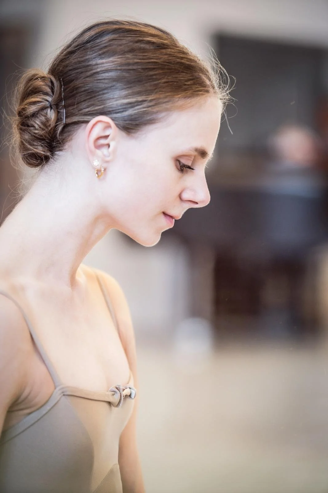

Hjerternes Dans
Velkommen til Hjerternes Dans
Et digitalt univers med inspiration til dig, der gerne vil skabe glæde og nærvær gennem bevægelse og musik.
Historien bag
Bella Speranza
Her får du gratis adgang til bogen Hjerternes Dans, smukke musikstykker og inspirerende videoer, der bygger på erfaringerne fra Bella Speranza.
Bella Speranza var et NGO-projekt, der kørte fra 2012 til 2020, og blev skabt af frivillige kræfter på Det Kongelige Teater med det formål at give kronisk syge børn et frirum fra deres sygdom.
Gennem dans, bevægelse og musik kunne børnene udtrykke sig frit og finde styrke i deres kroppe, uanset fysiske begrænsninger. Projektet viste, hvordan nærvær, omsorg og kreativitet kan skabe forandring og glæde – uden store budgetter eller krav om perfektion.


Lad dig inspirere
Dans, musik og fællesskab
Nu kan du lade dig inspirere af Bella Speranza og skabe dit eget projekt – på hospitaler, plejehjem, skoler, rehabiliteringscentre eller hvor som helst, der er behov for bevægelse, fællesskab og livsglæde.
“Hjerternes Dans er skrevet for at inspirere andre til at bringe mennesker sammen gennem dans og musik – på hospitaler, plejehjem, skoler, rehabiliteringscentre eller hvor som helst, der er behov for bevægelse, fællesskab og livsglæde.”
Tag det første skridt. Download bogen, hør musikken – og lad dig inspirere til at skabe din egen hjerternes dans.
Bella i medierne
Et projekt, der lever videre
Hjerternes Dans bygger videre på Bella Speranzas arbejde med at skabe nærvær, fællesskab og glæde gennem bevægelse og musik.

En særlig tak
Tak til dem, der gjorde projektet muligt

Tak til Københavns Rotary Klub og ungdomsfond samt Ida Praetorius for finansieringen af denne udgivelse.